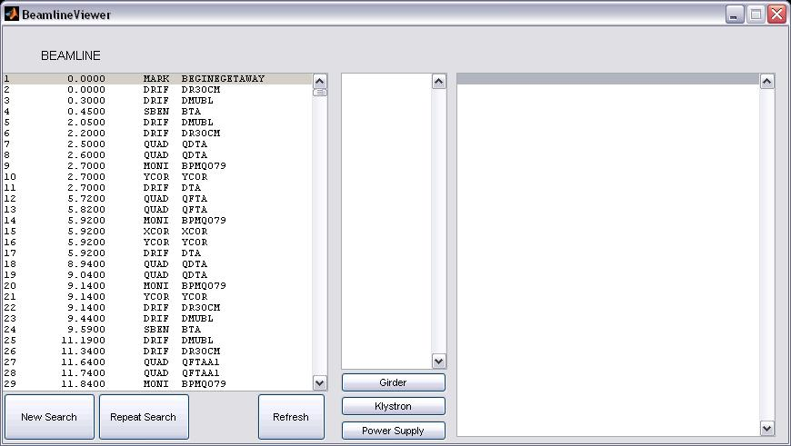

The LUCRETIA
Project
Graphical User Interface
BeamlineViewer
at the Matlab prompt. What you should see (assuming that you have
defined the BEAMLINE cell array) is something like this:
:
(Of course, the window looks somewhat different on Linux or Solaris;
the display above was screen-captured from a Windows XP
computer). The buttons on the left allow you to define and
execute a search (via another GUI), repeat it, or refresh the beamline
data list in the left-hand list box. The buttons in the center
generate a list or Girders, Klystrons, or Power Supplies in the very
skinny center list box. Double-clicking on a line in either the
left or center list boxes causes the appropriate data entry (a beamline
element, girder, klystron, or power supply) to be displayed in the
right-hand list box. Clicking on the Element, Girder, Klystron,
PS, Block, or Slices lines on whatever is displayed in the right-hand
list box will do other useful and neat things.
quarkpt
02-August-2007